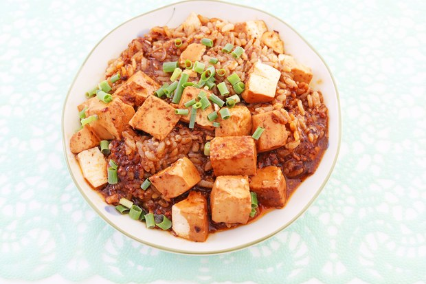

Chinese Tofu Curry (Mapo Topu)

INGREDIENTS
- 500g fresh tofu
- 150g minced (scalped) beef
- 500g green onions
- 120g cooking oil
- 5.5g salt
- chili powder(to taste)
- 20ml Mapo tofu sauce(soy sauce)
- 20g Pixian bean paste
- 250g double-boiled soup (made from bone with ginger and pepper)
- 40g starch and water (thee starchy sauce)
- 2g chicken powder
PREPARATION
- Dice the tofu into 2cm (1/2 - 1") cubes, and put them into a bowl of hot wate to remove astringency.
- Clean and cut the green onions into small pieces.
- Make the starchy sauce by mixing the starch and water.
COOKING METHOD
- Heat up a wok with the prepared vegetable oil to around 80.C.
- Fry the chopped beef in the wok till it becomes light brown, and then add the salt, Mapo Tofu sauce,
chili powder and Pixian bean paste. Keep frying.
- Add the double-boiled soup and diced tofu, and use a moderate heat to cook till tasty.
- Add the garlic sprouts and soy sauce, cook for a few seconds and thicken with the starchy sauce.
(Add chicken powder if you like.)
- Serve in a shallow bowl, topped with chili powder and chopped spring green onions.
Tutorial Video